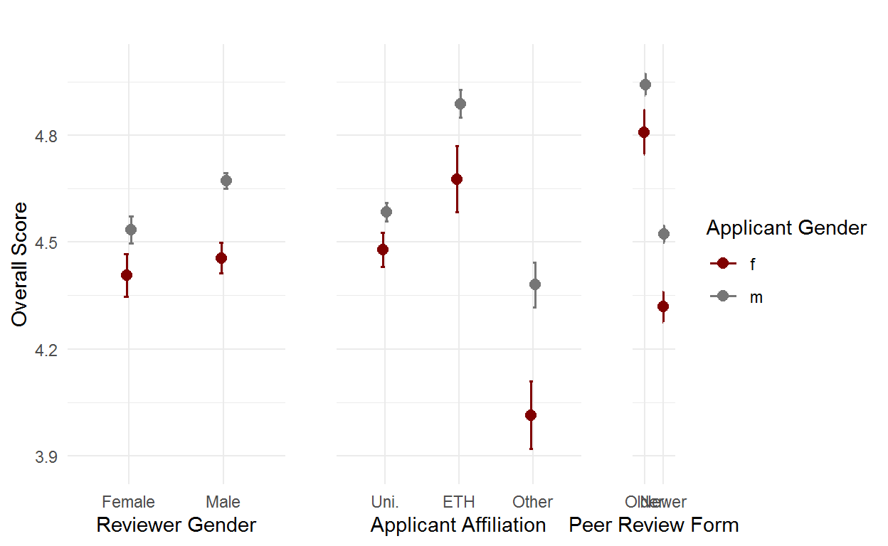

Synopsis
This notebook provides additional material to a preprint of a manuscript and a conference abstract presented at the 5th International Congress on Peer Review and Scientific Publication.
Data
We analyzed review scores provided by external reviewers evaluating the overall quality of grant applications submitted to SNSF project funding between 2009 and 2016. Our goal is to investigate possible scoring biases by exploring how scores distribute under different conditions. We explored differences in score distributions according to the origin of the review (Switzerland/international), the gender of the applicant and of the reviewer (male/female), and the source of nomination of the reviewer (applicant/SNSF).
The dataset contains 38’250 reviews of 12’294 unique grant applications submitted by 5’832 unique applicants and evaluated by 26’829 unique external reviewers between 2009 and 2016. The average number of reviews per grant application was 3.11, applicants submitted an average of 2.11 grant applications and reviewers reviewed an average of 1.42 applications. The review scores (overall_score) consist of the following six-level rating scale: poor (1), fair (2) average (3), good (4), excellent (5), and outstanding (6). The following table gives characteristics of the applicants on the date of their first submission of a project grant proposal (Table 1 of the manuscript). Figure 1 shows how the amount of female applicants increased over time compared to male applicants. It also shows the average ratio of female external reviewers per project. This last ratio depends however strongly on the research topic (see Figure 2).
| Female applicants | Male applicants | |
|---|---|---|
| (n = 1306, 22.44) | (n = 4514, 77.56) | |
| Age (mean, SD) | 46.23 (8.27) | 48.24 (8.63) |
| applicant_affiliation | ||
| ETH Domain | 219 (16.77%) | 1195 (26.47%) |
| Other | 224 (17.15%) | 481 (10.66%) |
| Universities | 863 (66.08%) | 2838 (62.87%) |
| applicant_nationality | ||
| ch | 733 (56.13%) | 2618 (58%) |
| int | 573 (43.87%) | 1896 (42%) |
| research_topic | ||
| Architecture | 56 (4.29%) | 146 (3.23%) |
| Biology | 129 (9.88%) | 611 (13.54%) |
| Chemistry | 76 (5.82%) | 378 (8.37%) |
| Economics | 84 (6.43%) | 290 (6.42%) |
| Engineering | 74 (5.67%) | 527 (11.67%) |
| Geology | 24 (1.84%) | 144 (3.19%) |
| History | 68 (5.21%) | 209 (4.63%) |
| Linguistics | 102 (7.81%) | 203 (4.5%) |
| Math./Physics | 56 (4.29%) | 491 (10.88%) |
| Medicine | 317 (24.27%) | 1029 (22.8%) |
| Psychology | 164 (12.56%) | 223 (4.94%) |
| Sociology | 156 (11.94%) | 263 (5.83%) |
| call_end_date | ||
| 2009-04-01 | 27 (2.07%) | 118 (2.61%) |
| 2009-10-01 | 45 (3.45%) | 164 (3.63%) |
| 2010-04-01 | 35 (2.68%) | 150 (3.32%) |
| 2010-10-01 | 49 (3.75%) | 187 (4.14%) |
| 2011-04-01 | 52 (3.98%) | 163 (3.61%) |
| 2011-10-01 | 52 (3.98%) | 195 (4.32%) |
| 2012-04-01 | 58 (4.44%) | 205 (4.54%) |
| 2012-10-01 | 62 (4.75%) | 249 (5.52%) |
| 2013-04-01 | 78 (5.97%) | 313 (6.93%) |
| 2013-10-01 | 88 (6.74%) | 309 (6.85%) |
| 2014-04-01 | 117 (8.96%) | 349 (7.73%) |
| 2014-10-01 | 153 (11.72%) | 368 (8.15%) |
| 2015-04-01 | 132 (10.11%) | 459 (10.17%) |
| 2015-10-01 | 170 (13.02%) | 609 (13.49%) |
| 2016-04-01 | 188 (14.4%) | 676 (14.98%) |
| applicant_continent_notCH | ||
| Africa | 1 (0.08%) | 13 (0.29%) |
| Americas | 39 (2.99%) | 126 (2.79%) |
| Asia | 14 (1.07%) | 54 (1.2%) |
| Europe (not CH) | 517 (39.59%) | 1695 (37.55%) |
| Oceania | 2 (0.15%) | 7 (0.16%) |
| Switzerland | 733 (56.13%) | 2618 (58%) |
| NA | NA | 1 (0.02%) |
Figure 1: Ratio of females among all the applicants over time and ratio of female external reviewers per grant application.
Figure 2: Ratio of females reviewers per grant application over time depending on the research topic.
17.8% of the grant applications had only male external reviewers, while 1.05% had only female external reviewers. For the applications rated by at least one male and one female reviewer, the male reviewer(s) gave a score which was on average 0.04 points higher than the score attributed by the female reviewer(s).
Exploratory Data Analysis
Score Frequency Distributions
Visual inspection of the frequency distributions of review scores indicate overall negative skweness.
Figures 3 and 4 show that the skweness is strongest for review scores attributed by applicant-nominated reviewers (Figure 3). Figure 4 also reveals that the relative frequency of outstanding review scores from international-based reviewers is roughly double of that from Swiss-based reviewers.
Figure 3: Frequency distributions of external review scores by source of nomination of the reviewer. Applicant-nominated reviewers on the left, SNSF-nominated reviewers on the right.
Figure 4: Frequency distributions of external review scores by country of affiliation of the reviewer. International-based reviewers on the left, Swiss-based reviewers on the right.
The gender of the applicants also appears to have an influence on review scores’ distribution. Figure 5 shows a more negative skweness of the review scores’ distribution for male applicant than for female applicants.
Figure 5: Frequency distributions of external review scores by gender of the principal applicants.
Interestingly, gender of reviewers follow a similar pattern. Figure 6 shows that the skweness also seems to be more negative for review scores given by male reviewers than by female reviewers. This indicates that both the gender of applicants and reviewers likely have an influence on review scores’ distribution. The Table 1 shows the same information in form of a table.
Figure 6: Frequency distributions of external review scores by gender of the reviewers.
| Average overall score (SD) | Median overall score (IQR) | |
|---|---|---|
| Applicant-Nominated Reviewers (N=8’755) | 5.12 (1) | 5 (1) |
| SNSF-Nominated Reviewers (N=29’495) | 4.43 (1.25) | 5 (1) |
| International-Based Reviewers (N=29’423) | 4.71 (1.19) | 5 (2) |
| National-Based Reviewers (N=8’604) | 4.16 (1.28) | 4 (2) |
| Female Applicants (N=7’764) | 4.42 (1.25) | 5 (1) |
| Male Applicants (N=30’455) | 4.63 (1.22) | 5 (2) |
| Female Reviewers (N=7’591) | 4.44 (1.26) | 5 (1) |
| Male Reviewers (N=30’659) | 4.63 (1.22) | 5 (2) |
To follow on gender, we show, in Figure 7, summary statistics of the review scores by gender of the applicant and by research topic. For example. in Mathematics and Physics, male applicants receive outstandingly high review scores on average.
Figure 7: Upper panel: Mean review scores by research topic of the grant applications for both female and male applicants. Horizontal lines indicate Wald confidence intervals of the mean. Lower panel: Proportions of female and male applicants by research topic.
Figure 8 shows summary statistics of the review scores by gender and by age group of the applicants. This representation reveals a clearer distinction in the average review scores between the two genders. Figure 8 also presents the “leaky pipeline” by plotting the share of female grant applicants for each age class in the bottom-right panel of the figure. Figure 9 simply zooms into the previous one, by deleting the group with very low counts.
Figure 8: Upper panels: mean review scores by age group for both female (top) and male (bottom) applicants. Horizontal lines indicate the Wald confidence interval of the mean. Lower panel: Proportions of female and male applicants per age group.
Figure 9: Upper panels: mean review scores by age group for both female (top) and male (bottom) applicants. Horizontal lines indicate the Wald confidence interval of the mean. Lower panel: Proportions of female and male applicants per age group. This figure does not include the age groups with very low counts to facilitate the interpretation.
In Figure 10, we show summary statistics of the review scores by gender and by affiliation of the applicants. Grants submitted by researchers from the ETH Domain receive higher average scores than applications from Cantonal Universities or from Other Research Institutes. Gender differences are more easily noticeable in the ETH Domain and Other Research Institutions than in Cantonal Universities.
Figure 10: Upper panels: Mean review scores by the affiation of the applicants. Point range indicates the Wald confidence interval of the mean. Lower panel: Proportions of female and male applicants by affiliation.
Another possible source of bias could be the nationality of grant applicants. In Figure 11, we again show summary statistics of the review scores by gender and by nationality if the applicants. Both national and foreign male applicants receive higher reviews scores than their female counterparts, on average, with foreign national scoring slightly above Swiss nationals on average.
Figure 11: Mean review scores by the nationality of the applicant type. Point range indicates the Wald confidence interval of the mean.
Last, Figure 12 illustrates the introduction of new guidelines for reviewers in 2011-10-01. Grant applications submitted before 2011-10-01 show significantly higher average scores than the more recent applications. We account for this shift in the distribution of review scores with a dummy variable (call_cut) which groups grant applications according to whether they were submitted before or after the introduction of the newer reviewing guidelines.
Figure 12: Mean review scores by call deadline. Point range indicates Wald confidence intervals of the mean.
Estimating the Effect of Each Variable
To quantify the effect of each variable on the observed mean differences, we fit the data points to a linear mixed effects model (Bates et al. 2015). This type of model extends the linear model in that it accounts for both random and fixed types of effects (Harrison et al. 2018) and is often preferred over ordinal mixed effects models when the dependent variable has 5 or more levels.
First, we explore which random effect to include by adding random effects step-wise and measuring the relative gain in predictive power using Akaike’s Information Criterion (AIC) and Chi-squared comparisons. Then, we proceed by adding the fixed effects.
Data manipulations before modelling
To make a comparison of the later univariate or crude estimates and multivariate or adjusted estimates feasible we proceed to a ‘complete case’ analysis. Otherwise the models with variables without any missings are developed on the whole dataset with 38’250 observations while the full model includes variable with some missings leading to a development dataset with only 37’979 reviews. Hence, we will reduce the dataset used for all modelling to the set of 37’979 (99.3%) observations.
A second small data manipulation is the releveling of the two factors in the adjusted model, ‘applicant_affiliation’ and ‘research_topic’. The reference of the factors will simply be the level with the highest count, which is ‘Universities’ for the affiliation and ‘Medicine’ for the research topic. The following Table presents some summary statistics of this complete data set.
Random Effects
As already mentioned, each grant application typically receives more than one independent review, with each reviewer being able to review more than one grant application over the time period considered.
We start by explaining the overall score (overall_score) as a function of the dummy variable call_cut, accounting for introduction of new reviewing guidelines in 2011-10-01, and two random effects, one accounting for the project_id (unique identifier of a grant application), the other accounting for the reviewer_id (unique identifier a reviewer). In R, we write a first model (model_1) as follows:
lme4::lmer(score ~ call_cut +
(1|project_id) + (1|reviewer_id))| overall score | ||||
|---|---|---|---|---|
| Coefficient | Estimates | SE | t-Statistic | P-Value |
| (Intercept) | 4.92 (4.89 – 4.94) | 0.01 | 353.67 | <0.001 |
| newer | -0.43 (-0.47 – -0.40) | 0.02 | -27.17 | <0.001 |
| Random Effects | ||||
| σ2 | 0.69 | |||
| τ00 reviewer_id | 0.49 | |||
| τ00 project_id | 0.28 | |||
| ICC | 0.53 | |||
| N project_id | 12277 | |||
| N reviewer_id | 26614 | |||
| Observations | 37979 | |||
| Marginal R2 / Conditional R2 | 0.026 / 0.539 | |||
In a second random effects model (model_2), we add a random effect accounting for the applicant_id (unique identifier of a grant applicant) to account for the fact that each applicant may submit more than one grant application. In R, the model is written as:
lme4::lmer(score ~ call_cut +
(1|project_id) + (1|reviewer_id) + (1|applicant_id))| overall score | ||||
|---|---|---|---|---|
| Coefficient | Estimates | SE | t-Statistic | P-Value |
| (Intercept) | 4.91 (4.89 – 4.94) | 0.01 | 340.02 | <0.001 |
| newer | -0.44 (-0.47 – -0.41) | 0.02 | -29.12 | <0.001 |
| Random Effects | ||||
| σ2 | 0.70 | |||
| τ00 reviewer_id | 0.47 | |||
| τ00 project_id | 0.08 | |||
| τ00 applicant_id | 0.23 | |||
| ICC | 0.53 | |||
| N applicant_id | 5819 | |||
| N project_id | 12277 | |||
| N reviewer_id | 26614 | |||
| Observations | 37979 | |||
| Marginal R2 / Conditional R2 | 0.026 / 0.542 | |||
Last, in a third random effects model (model_3), we add a random effect accounting for the call_end_date, to account for any possible correlations across calls which might not be yet explained by the dummy variable call_cut:
lme4::lmer(score ~ call_cut +
(1|project_id) + (1|reviewer_id) + (1|applicant_id) +
(1|call_end_date))| overall score | ||||
|---|---|---|---|---|
| Coefficient | Estimates | SE | t-Statistic | P-Value |
| (Intercept) | 4.91 (4.88 – 4.95) | 0.02 | 272.44 | <0.001 |
| newer | -0.44 (-0.48 – -0.40) | 0.02 | -21.85 | <0.001 |
| Random Effects | ||||
| σ2 | 0.70 | |||
| τ00 reviewer_id | 0.47 | |||
| τ00 project_id | 0.08 | |||
| τ00 applicant_id | 0.23 | |||
| τ00 call_end_date | 0.00 | |||
| ICC | 0.53 | |||
| N call_end_date | 15 | |||
| N applicant_id | 5819 | |||
| N project_id | 12277 | |||
| N reviewer_id | 26614 | |||
| Observations | 37979 | |||
| Marginal R2 / Conditional R2 | 0.026 / 0.542 | |||
An analysis of the random effects of the three models shows that the second model significantly reduces the residual sum of squares of the first model (see Table 2).
| Model | Df | AIC | BIC | logLik | deviance | Chisq | Df | Pr(>Chisq) |
|---|---|---|---|---|---|---|---|---|
| model_1 | 5 | 118462.7 | 118505.4 | -59226.33 | 118452.7 | NA | NA | NA |
| model_2 | 6 | 117552.2 | 117603.5 | -58770.11 | 117540.2 | 912.4297 | 1 | 0 |
The third model, however, accounting for an extra random effect for the call_end_date does not improve the second model significantly (see Table 3). We will therefore use the second model as the basis to measure possible fixed effects of remaining factors.
| Model | Df | AIC | BIC | logLik | deviance | Chisq | Df | Pr(>Chisq) |
|---|---|---|---|---|---|---|---|---|
| model_2 | 6 | 117552.2 | 117603.5 | -58770.11 | 117540.2 | NA | NA | NA |
| model_3 | 7 | 117551.8 | 117611.6 | -58768.88 | 117537.8 | 2.473346 | 1 | 0.1157912 |
Fixed Effects
Using the model accounting for the random effects of both applicants and reviewers, we first look at the crude fixed effects regarding:
- the origin of the review
lme4::lmer(score ~ call_cut + review_origin +
(1|project_id) + (1|reviewer_id) + (1|applicant_id))| overall score | ||||
|---|---|---|---|---|
| Coefficient | Estimates | SE | t-Statistic | P-Value |
| (Intercept) | 5.03 (5.00 – 5.06) | 0.01 | 342.40 | <0.001 |
| Reviewer: Swiss-Based | -0.53 (-0.56 – -0.49) | 0.02 | -30.12 | <0.001 |
| Call Cut: 2009–2011 | -0.46 (-0.49 – -0.44) | 0.01 | -31.27 | <0.001 |
| Random Effects | ||||
| σ2 | 0.71 | |||
| τ00 reviewer_id | 0.43 | |||
| τ00 project_id | 0.08 | |||
| τ00 applicant_id | 0.21 | |||
| ICC | 0.50 | |||
| N applicant_id | 5819 | |||
| N project_id | 12277 | |||
| N reviewer_id | 26614 | |||
| Observations | 37979 | |||
| Marginal R2 / Conditional R2 | 0.056 / 0.530 | |||
- the gender of the applicant
lme4::lmer(score ~ call_cut + applicant_gender +
(1|project_id) + (1|reviewer_id) + (1|applicant_id))| overall score | ||||
|---|---|---|---|---|
| Coefficient | Estimates | SE | t-Statistic | P-Value |
| (Intercept) | 4.77 (4.72 – 4.81) | 0.02 | 208.19 | <0.001 |
| Applicant: Male | 0.18 (0.14 – 0.23) | 0.02 | 8.31 | <0.001 |
| Call Cut: 2009–2011 | -0.43 (-0.46 – -0.40) | 0.01 | -28.89 | <0.001 |
| Random Effects | ||||
| σ2 | 0.70 | |||
| τ00 reviewer_id | 0.47 | |||
| τ00 project_id | 0.08 | |||
| τ00 applicant_id | 0.23 | |||
| ICC | 0.53 | |||
| N applicant_id | 5819 | |||
| N project_id | 12277 | |||
| N reviewer_id | 26614 | |||
| Observations | 37979 | |||
| Marginal R2 / Conditional R2 | 0.030 / 0.542 | |||
- the gender of the reviewer
lme4::lmer(score ~ call_cut + reviewer_gender +
(1|project_id) + (1|reviewer_id) + (1|applicant_id))| overall score | ||||
|---|---|---|---|---|
| Coefficient | Estimates | SE | t-Statistic | P-Value |
| (Intercept) | 4.82 (4.78 – 4.86) | 0.02 | 243.69 | <0.001 |
| Reviewer: Male | 0.11 (0.08 – 0.15) | 0.02 | 6.84 | <0.001 |
| Call Cut: 2009–2011 | -0.43 (-0.46 – -0.41) | 0.01 | -28.99 | <0.001 |
| Random Effects | ||||
| σ2 | 0.70 | |||
| τ00 reviewer_id | 0.47 | |||
| τ00 project_id | 0.08 | |||
| τ00 applicant_id | 0.23 | |||
| ICC | 0.53 | |||
| N applicant_id | 5819 | |||
| N project_id | 12277 | |||
| N reviewer_id | 26614 | |||
| Observations | 37979 | |||
| Marginal R2 / Conditional R2 | 0.028 / 0.542 | |||
- reviewer’s nomination source
lme4::lmer(score ~ call_cut + nomination_type +
(1|project_id) + (1|reviewer_id) + (1|applicant_id))| overall score | ||||
|---|---|---|---|---|
| Coefficient | Estimates | SE | t-Statistic | P-Value |
| (Intercept) | 5.31 (5.27 – 5.34) | 0.02 | 303.32 | <0.001 |
| Nomination: SNSF | -0.53 (-0.56 – -0.50) | 0.01 | -37.87 | <0.001 |
| Call Cut: 2009–2011 | -0.41 (-0.44 – -0.38) | 0.01 | -27.85 | <0.001 |
| Random Effects | ||||
| σ2 | 0.70 | |||
| τ00 reviewer_id | 0.42 | |||
| τ00 project_id | 0.08 | |||
| τ00 applicant_id | 0.20 | |||
| ICC | 0.50 | |||
| N applicant_id | 5819 | |||
| N project_id | 12277 | |||
| N reviewer_id | 26614 | |||
| Observations | 37979 | |||
| Marginal R2 / Conditional R2 | 0.060 / 0.534 | |||
(5. the age of applicant)
lme4::lmer(score ~ applicant_age + call_cut +
(1|project_id) + (1|reviewer_id) + (1|applicant_id))| overall score | ||||
|---|---|---|---|---|
| Coefficient | Estimates | SE | t-Statistic | P-Value |
| (Intercept) | 4.66 (4.56 – 4.76) | 0.05 | 89.98 | <0.001 |
| Applicant Age | 0.06 (0.03 – 0.08) | 0.01 | 5.09 | <0.001 |
| Call Cut: 2009–2011 | -0.45 (-0.48 – -0.42) | 0.02 | -29.57 | <0.001 |
| Random Effects | ||||
| σ2 | 0.70 | |||
| τ00 reviewer_id | 0.47 | |||
| τ00 project_id | 0.08 | |||
| τ00 applicant_id | 0.23 | |||
| ICC | 0.53 | |||
| N project_id | 12277 | |||
| N reviewer_id | 26614 | |||
| N applicant_id | 5819 | |||
| Observations | 37979 | |||
| Marginal R2 / Conditional R2 | 0.028 / 0.543 | |||
(6. the affiliation of applicant)
lme4::lmer(score ~ applicant_affiliation + call_cut +
(1|project_id) + (1|reviewer_id) + (1|applicant_id))| overall score | ||||
|---|---|---|---|---|
| Coefficient | Estimates | SE | t-Statistic | P-Value |
| (Intercept) | 4.86 (4.83 – 4.89) | 0.02 | 309.43 | <0.001 |
| Applicant Affil.: ETH Domain | 0.30 (0.26 – 0.34) | 0.02 | 13.89 | <0.001 |
| Applicant Affil.: Other | -0.24 (-0.30 – -0.19) | 0.03 | -8.51 | <0.001 |
| Call Cut: 2009–2011 | -0.43 (-0.46 – -0.40) | 0.01 | -28.66 | <0.001 |
| Random Effects | ||||
| σ2 | 0.70 | |||
| τ00 reviewer_id | 0.47 | |||
| τ00 project_id | 0.08 | |||
| τ00 applicant_id | 0.21 | |||
| ICC | 0.52 | |||
| N project_id | 12277 | |||
| N reviewer_id | 26614 | |||
| N applicant_id | 5819 | |||
| Observations | 37979 | |||
| Marginal R2 / Conditional R2 | 0.045 / 0.540 | |||
To see whether there actually is an effect of the affiliation we seek for a single p-value for this varible by applying the anova function on the models with and without the specific variable.
| Model | Df | AIC | BIC | logLik | deviance | Chisq | Df | Pr(>Chisq) |
|---|---|---|---|---|---|---|---|---|
| model0_affiliation_crude | 6 | 117552.2 | 117603.5 | -58770.11 | 117540.2 | NA | NA | NA |
| crude_5 | 8 | 117237.7 | 117306.1 | -58610.86 | 117221.7 | 318.5097 | 2 | 0 |
(7. the nationality of applicant)
lme4::lmer(score ~ applicant_nationality + call_cut +
(1|project_id) + (1|reviewer_id) + (1|applicant_id))| overall score | ||||
|---|---|---|---|---|
| Coefficient | Estimates | SE | t-Statistic | P-Value |
| (Intercept) | 4.90 (4.87 – 4.94) | 0.02 | 300.14 | <0.001 |
| App. Nationality: Foreign | 0.03 (-0.01 – 0.06) | 0.02 | 1.42 | 0.155 |
| Call Cut: 2009–2011 | -0.44 (-0.47 – -0.41) | 0.02 | -29.15 | <0.001 |
| Random Effects | ||||
| σ2 | 0.70 | |||
| τ00 reviewer_id | 0.47 | |||
| τ00 project_id | 0.08 | |||
| τ00 applicant_id | 0.23 | |||
| ICC | 0.53 | |||
| N project_id | 12277 | |||
| N reviewer_id | 26614 | |||
| N applicant_id | 5819 | |||
| Observations | 37979 | |||
| Marginal R2 / Conditional R2 | 0.026 / 0.542 | |||
(8. the research topic)
lme4::lmer(score ~ research_topic + call_cut +
(1|project_id) + (1|reviewer_id) + (1|applicant_id))| overall score | ||||
|---|---|---|---|---|
| Coefficient | Estimates | SE | t-Statistic | P-Value |
| (Intercept) | 4.69 (4.65 – 4.73) | 0.02 | 218.55 | <0.001 |
| Topic: Architecture | 0.13 (0.03 – 0.24) | 0.05 | 2.63 | 0.009 |
| Topic: Biology | 0.30 (0.24 – 0.36) | 0.03 | 9.79 | <0.001 |
| Topic: Chemistry | 0.46 (0.39 – 0.53) | 0.04 | 13.05 | <0.001 |
| Topic: Economics | -0.09 (-0.17 – -0.01) | 0.04 | -2.21 | 0.027 |
| Topic: Engineering | 0.32 (0.25 – 0.38) | 0.03 | 10.03 | <0.001 |
| Topic: Geology | 0.50 (0.39 – 0.60) | 0.05 | 9.24 | <0.001 |
| Topic: History | 0.35 (0.27 – 0.44) | 0.04 | 8.14 | <0.001 |
| Topic: Linguistics | 0.30 (0.22 – 0.38) | 0.04 | 7.13 | <0.001 |
| Topic: Math/Phys | 0.68 (0.62 – 0.75) | 0.03 | 20.52 | <0.001 |
| Topic: Psychology | -0.12 (-0.20 – -0.05) | 0.04 | -3.19 | 0.001 |
| Topic: Sociology | -0.06 (-0.13 – 0.02) | 0.04 | -1.49 | 0.136 |
| Call Cut: 2009–2011 | -0.43 (-0.46 – -0.40) | 0.01 | -29.01 | <0.001 |
| Random Effects | ||||
| σ2 | 0.71 | |||
| τ00 reviewer_id | 0.45 | |||
| τ00 project_id | 0.08 | |||
| τ00 applicant_id | 0.17 | |||
| ICC | 0.50 | |||
| N project_id | 12277 | |||
| N reviewer_id | 26614 | |||
| N applicant_id | 5819 | |||
| Observations | 37979 | |||
| Marginal R2 / Conditional R2 | 0.068 / 0.533 | |||
To see whether there actually is an effect of the research topic we seek for a single p-value for this varible by applying the anova function on the models with and without the specific variable.
| Model | Df | AIC | BIC | logLik | deviance | Chisq | Df | Pr(>Chisq) |
|---|---|---|---|---|---|---|---|---|
| model0_topic_crude | 6 | 117552.2 | 117603.5 | -58770.11 | 117540.2 | NA | NA | NA |
| crude_7 | 17 | 116829.4 | 116974.7 | -58397.70 | 116795.4 | 744.8185 | 11 | 0 |
Finally, we look at the corresponding adjusted effects when accounting for the all factors together. In R, we write the model as follows:
lme4::lmer(score ~ call_cut +
nomination_type + research_topic +
applicant_gender + applicant_age +
applicant_affiliation + applicant_nationality +
review_origin + reviewer_gender +
(1|project_id) + (1|reviewer_id) + (1|applicant_id))When accounting for the all factors, the adjusted effects regarding the origin of the reviews and source of nomination remain of the same order of magnitude as their corresponding unadjusted effects. The effects related to gender, however, nearly vanish. The adjusted effect of the gender of the applicants falls by more than 50% of its original unadjusted value, while the adjusted effect of the gender of the reviewer decreases by approximately 30% of its previous unadjusted value. This result indicates that most of the initially effect attributed to gender can be due to differences of average scores between topics and affiliation. Interestingly, applicants’ age showed little effect whereas nationality showed no effect on the mean of review scores.
| overall score | ||||
|---|---|---|---|---|
| Coefficient | Estimates | SE | t-Statistic | P-Value |
| (Intercept) | 4.89 (4.78 – 5.00) | 0.06 | 86.25 | <0.001 |
| Applicant: Male | 0.08 (0.04 – 0.13) | 0.02 | 4.12 | <0.001 |
| Applicant Age | 0.05 (0.03 – 0.07) | 0.01 | 4.40 | <0.001 |
| Applicant Affil.: ETH Domain | 0.11 (0.07 – 0.16) | 0.02 | 4.81 | <0.001 |
| Applicant Affil.: Other | -0.19 (-0.25 – -0.14) | 0.03 | -6.94 | <0.001 |
| App. Nationality: Foreign | -0.03 (-0.06 – 0.01) | 0.02 | -1.46 | 0.143 |
| Nomination: SNSF | -0.49 (-0.51 – -0.46) | 0.01 | -34.55 | <0.001 |
| Reviewer: Male | 0.08 (0.05 – 0.11) | 0.02 | 4.94 | <0.001 |
| Reviewer: Swiss-Based | -0.47 (-0.50 – -0.44) | 0.02 | -27.63 | <0.001 |
| Topic: Architecture | 0.15 (0.05 – 0.25) | 0.05 | 2.87 | 0.004 |
| Topic: Biology | 0.27 (0.21 – 0.33) | 0.03 | 9.04 | <0.001 |
| Topic: Chemistry | 0.24 (0.17 – 0.31) | 0.04 | 6.78 | <0.001 |
| Topic: Economics | -0.01 (-0.09 – 0.06) | 0.04 | -0.33 | 0.743 |
| Topic: Engineering | 0.07 (0.00 – 0.13) | 0.03 | 2.00 | 0.045 |
| Topic: Geology | 0.25 (0.14 – 0.35) | 0.05 | 4.73 | <0.001 |
| Topic: History | 0.32 (0.24 – 0.40) | 0.04 | 7.68 | <0.001 |
| Topic: Linguistics | 0.26 (0.18 – 0.34) | 0.04 | 6.53 | <0.001 |
| Topic: Math/Phys | 0.45 (0.39 – 0.52) | 0.03 | 13.34 | <0.001 |
| Topic: Psychology | -0.08 (-0.15 – -0.00) | 0.04 | -2.01 | 0.044 |
| Topic: Sociology | 0.01 (-0.06 – 0.08) | 0.04 | 0.16 | 0.872 |
| Call Cut: 2009–2011 | -0.43 (-0.46 – -0.40) | 0.01 | -29.56 | <0.001 |
| Random Effects | ||||
| σ2 | 0.72 | |||
| τ00 reviewer_id | 0.37 | |||
| τ00 project_id | 0.08 | |||
| τ00 applicant_id | 0.15 | |||
| ICC | 0.46 | |||
| N applicant_id | 5819 | |||
| N project_id | 12277 | |||
| N reviewer_id | 26614 | |||
| Observations | 37979 | |||
| Marginal R2 / Conditional R2 | 0.130 / 0.526 | |||
Again, to get a single p-value for the categorical varibles in the model we do likelihood ratio tests, as seen in the tables below.
| Model | Df | AIC | BIC | logLik | deviance | Chisq | Df | Pr(>Chisq) |
|---|---|---|---|---|---|---|---|---|
| model0_affiliation | 23 | 114813.6 | 115010.1 | -57383.79 | 114767.6 | NA | NA | NA |
| adjusted | 25 | 114730.6 | 114944.3 | -57340.32 | 114680.6 | 86.94008 | 2 | 0 |
| Model | Df | AIC | BIC | logLik | deviance | Chisq | Df | Pr(>Chisq) |
|---|---|---|---|---|---|---|---|---|
| model0_topic | 14 | 115049.7 | 115169.3 | -57510.83 | 115021.7 | NA | NA | NA |
| adjusted | 25 | 114730.6 | 114944.3 | -57340.32 | 114680.6 | 341.0096 | 11 | 0 |
Interactions with gender of the applicant
We are now interested in possible interactions between the fixed effect variables in the upper model with the gender of the applicants, meaning that some overall score effects might be different among female and male applicants. In the following, we show all the tables used to write the interaction part of the manuscript.
Age of the applicants:
| with interaction | without interaction | |||||
|---|---|---|---|---|---|---|
| (Intercept) | 4.385 | [4.164; 4.607] | <0.0001 | 4.418 | [4.311; 4.524] | <0.0001 |
| applicant_age | 0.012 | [-0.036; 0.06] | 0.6145 | 0.005 | [-0.016; 0.027] | 0.637 |
| applicant_genderm | 0.245 | [-0.005; 0.496] | 0.0549 | 0.204 | [0.16; 0.249] | <0.0001 |
| applicant_age:applicant_genderm | -0.009 | [-0.062; 0.045] | 0.7446 | NA | NA | NA |
| Full model with interaction | |||
|---|---|---|---|
| (Intercept) | 4.852 | [4.646; 5.058] | <0.0001 |
| applicant_genderm | 0.133 | [-0.089; 0.355] | 0.2413 |
| applicant_age | 0.054 | [0.011; 0.097] | 0.0146 |
| applicant_affiliationETH Domain | 0.112 | [0.066; 0.157] | <0.0001 |
| applicant_affiliationOther | -0.194 | [-0.248; -0.139] | <0.0001 |
| applicant_nationalityint | -0.025 | [-0.059; 0.009] | 0.1435 |
| nomination_sourceother | -0.485 | [-0.513; -0.458] | <0.0001 |
| reviewer_genderm | 0.08 | [0.048; 0.112] | <0.0001 |
| review_originnational | -0.47 | [-0.503; -0.436] | <0.0001 |
| research_topicArchitecture | 0.146 | [0.046; 0.246] | 0.0041 |
| research_topicBiology | 0.27 | [0.212; 0.329] | <0.0001 |
| research_topicChemistry | 0.241 | [0.171; 0.31] | <0.0001 |
| research_topicEconomics | -0.013 | [-0.088; 0.063] | 0.7438 |
| research_topicEngineering | 0.067 | [0.001; 0.133] | 0.0453 |
| research_topicGeology | 0.248 | [0.145; 0.35] | <0.0001 |
| research_topicHistory | 0.322 | [0.24; 0.404] | <0.0001 |
| research_topicLinguistics | 0.261 | [0.183; 0.34] | <0.0001 |
| research_topicMath./Physics | 0.452 | [0.386; 0.519] | <0.0001 |
| research_topicPsychology | -0.076 | [-0.15; -0.002] | 0.0442 |
| research_topicSociology | 0.006 | [-0.065; 0.076] | 0.8759 |
| call_cutnewer | -0.433 | [-0.461; -0.404] | <0.0001 |
| applicant_genderm:applicant_age | -0.01 | [-0.058; 0.037] | 0.6673 |
Figure 13: Interaction plot between gender and age of the applicant.
Gender of the reviewer
| with interaction | without interaction | |||||
|---|---|---|---|---|---|---|
| (Intercept) | 4.407 | [4.347; 4.466] | <0.0001 | 4.358 | [4.312; 4.405] | < 0.0001 |
| reviewer_genderm | 0.048 | [-0.012; 0.109] | 0.1188 | 0.115 | [0.082; 0.148] | < 0.0001 |
| applicant_genderm | 0.128 | [0.06; 0.196] | 0.0002 | 0.195 | [0.151; 0.239] | < 0.0001 |
| reviewer_genderm:applicant_genderm | 0.089 | [0.021; 0.158] | 0.0108 | NA | NA | NA |
| Full model with interaction | |||
|---|---|---|---|
| (Intercept) | 4.928 | [4.812; 5.045] | <0.0001 |
| applicant_genderm | 0.033 | [-0.031; 0.096] | 0.3166 |
| reviewer_genderm | 0.028 | [-0.03; 0.086] | 0.3474 |
| applicant_age | 0.045 | [0.025; 0.065] | <0.0001 |
| applicant_affiliationETH Domain | 0.112 | [0.066; 0.157] | <0.0001 |
| applicant_affiliationOther | -0.194 | [-0.249; -0.139] | <0.0001 |
| applicant_nationalityint | -0.025 | [-0.059; 0.009] | 0.1471 |
| nomination_sourceother | -0.485 | [-0.513; -0.458] | <0.0001 |
| review_originnational | -0.469 | [-0.503; -0.436] | <0.0001 |
| research_topicArchitecture | 0.146 | [0.046; 0.246] | 0.0041 |
| research_topicBiology | 0.27 | [0.212; 0.329] | <0.0001 |
| research_topicChemistry | 0.24 | [0.17; 0.309] | <0.0001 |
| research_topicEconomics | -0.013 | [-0.089; 0.062] | 0.7304 |
| research_topicEngineering | 0.067 | [0; 0.133] | 0.0484 |
| research_topicGeology | 0.247 | [0.144; 0.35] | <0.0001 |
| research_topicHistory | 0.322 | [0.24; 0.404] | <0.0001 |
| research_topicLinguistics | 0.261 | [0.183; 0.34] | <0.0001 |
| research_topicMath./Physics | 0.451 | [0.385; 0.518] | <0.0001 |
| research_topicPsychology | -0.078 | [-0.152; -0.004] | 0.0398 |
| research_topicSociology | 0.004 | [-0.066; 0.075] | 0.9041 |
| call_cutnewer | -0.433 | [-0.462; -0.404] | <0.0001 |
| applicant_genderm:reviewer_genderm | 0.07 | [0.004; 0.136] | 0.0374 |
| Chisq | Df | Pr(>Chisq) | |
|---|---|---|---|
| (Intercept) | 21169.302801 | 1 | <0.001 |
| reviewer_gender | 2.433479 | 1 | 0.1188 |
| applicant_gender | 13.602843 | 1 | <0.001 |
| reviewer_gender:applicant_gender | 6.494317 | 1 | 0.0108 |
| Chisq | Df | Pr(>Chisq) | |
|---|---|---|---|
| (Intercept) | 6828.9826635 | 1 | <0.001 |
| applicant_gender | 1.0029741 | 1 | 0.3166 |
| reviewer_gender | 0.8828328 | 1 | 0.3474 |
| applicant_age | 19.1894872 | 1 | <0.001 |
| applicant_affiliation | 87.6878664 | 2 | <0.001 |
| applicant_nationality | 2.1023656 | 1 | 0.1471 |
| nomination_source | 1191.7712630 | 1 | <0.001 |
| review_origin | 762.7565780 | 1 | <0.001 |
| research_topic | 352.5022649 | 11 | <0.001 |
| call_cut | 874.2945707 | 1 | <0.001 |
| applicant_gender:reviewer_gender | 4.3340194 | 1 | 0.0374 |
Figure 14: Interaction plot between the genders of the applicant and the reviewer.
Affilitation of the applicant
| with interaction | without interaction | |||||
|---|---|---|---|---|---|---|
| (Intercept) | 4.479 | [4.431; 4.526] | <0.0001 | 4.434 | [4.393; 4.475] | < 0.0001 |
| applicant_affiliationETH Domain | 0.198 | [0.094; 0.302] | 0.0002 | 0.284 | [0.242; 0.327] | < 0.0001 |
| applicant_affiliationOther | -0.465 | [-0.57; -0.36] | <0.0001 | -0.278 | [-0.335; -0.221] | < 0.0001 |
| applicant_genderm | 0.105 | [0.052; 0.158] | 0.0001 | 0.163 | [0.12; 0.207] | < 0.0001 |
| applicant_affiliationETH Domain:applicant_genderm | 0.107 | [-0.007; 0.22] | 0.0648 | NA | NA | NA |
| applicant_affiliationOther:applicant_genderm | 0.261 | [0.137; 0.385] | <0.0001 | NA | NA | NA |
| Full model with interaction | |||
|---|---|---|---|
| (Intercept) | 4.918 | [4.805; 5.032] | <0.0001 |
| applicant_genderm | 0.046 | [-0.002; 0.095] | 0.0620 |
| applicant_affiliationETH Domain | 0.068 | [-0.029; 0.165] | 0.1718 |
| applicant_affiliationOther | -0.334 | [-0.432; -0.237] | <0.0001 |
| reviewer_genderm | 0.08 | [0.048; 0.111] | <0.0001 |
| applicant_age | 0.045 | [0.025; 0.066] | <0.0001 |
| applicant_nationalityint | -0.026 | [-0.06; 0.008] | 0.1291 |
| nomination_sourceother | -0.486 | [-0.513; -0.458] | <0.0001 |
| review_originnational | -0.469 | [-0.503; -0.436] | <0.0001 |
| research_topicArchitecture | 0.144 | [0.045; 0.244] | 0.0046 |
| research_topicBiology | 0.271 | [0.212; 0.329] | <0.0001 |
| research_topicChemistry | 0.24 | [0.171; 0.31] | <0.0001 |
| research_topicEconomics | -0.011 | [-0.087; 0.064] | 0.7680 |
| research_topicEngineering | 0.065 | [-0.001; 0.131] | 0.0541 |
| research_topicGeology | 0.248 | [0.146; 0.351] | <0.0001 |
| research_topicHistory | 0.321 | [0.238; 0.403] | <0.0001 |
| research_topicLinguistics | 0.259 | [0.181; 0.338] | <0.0001 |
| research_topicMath./Physics | 0.452 | [0.386; 0.519] | <0.0001 |
| research_topicPsychology | -0.073 | [-0.147; 0.001] | 0.0534 |
| research_topicSociology | 0.013 | [-0.058; 0.083] | 0.7262 |
| call_cutnewer | -0.432 | [-0.46; -0.403] | <0.0001 |
| applicant_genderm:applicant_affiliationETH Domain | 0.056 | [-0.046; 0.159] | 0.2826 |
| applicant_genderm:applicant_affiliationOther | 0.196 | [0.083; 0.309] | 0.0007 |
| Chisq | Df | Pr(>Chisq) | |
|---|---|---|---|
| (Intercept) | 34615.18569 | 1 | < 0.001 |
| applicant_affiliation | 105.53969 | 2 | < 0.001 |
| applicant_gender | 15.08441 | 1 | < 0.001 |
| applicant_affiliation:applicant_gender | 18.13420 | 2 | < 0.001 |
| Chisq | Df | Pr(>Chisq) | |
|---|---|---|---|
| (Intercept) | 7226.295673 | 1 | <0.001 |
| applicant_gender | 3.482912 | 1 | 0.0620 |
| applicant_affiliation | 51.771537 | 2 | <0.001 |
| reviewer_gender | 24.298277 | 1 | <0.001 |
| applicant_age | 19.460799 | 1 | <0.001 |
| applicant_nationality | 2.302993 | 1 | 0.1291 |
| nomination_source | 1194.924498 | 1 | <0.001 |
| review_origin | 763.378115 | 1 | <0.001 |
| research_topic | 349.924991 | 11 | <0.001 |
| call_cut | 869.793404 | 1 | <0.001 |
| applicant_gender:applicant_affiliation | 11.689856 | 2 | 0.0029 |
Figure 15: Interaction plot between the affiliation and the gender of the applicant.
Nationality of the applicant
| with interaction | without interaction | |||||
|---|---|---|---|---|---|---|
| (Intercept) | 4.427 | [4.374; 4.48] | <0.0001 | 4.437 | [4.394; 4.481] | <0.0001 |
| applicant_nationalityint | 0.033 | [-0.046; 0.113] | 0.4155 | 0.009 | [-0.028; 0.046] | 0.6288 |
| applicant_genderm | 0.219 | [0.159; 0.278] | <0.0001 | 0.205 | [0.161; 0.25] | <0.0001 |
| applicant_nationalityint:applicant_genderm | -0.031 | [-0.12; 0.059] | 0.5058 | NA | NA | NA |
| Full model with interaction | |||
|---|---|---|---|
| (Intercept) | 4.888 | [4.774; 5.003] | <0.0001 |
| applicant_genderm | 0.087 | [0.033; 0.14] | 0.0014 |
| applicant_nationalityint | -0.022 | [-0.093; 0.049] | 0.5389 |
| applicant_affiliationETH Domain | 0.112 | [0.066; 0.157] | <0.0001 |
| applicant_affiliationOther | -0.194 | [-0.248; -0.139] | <0.0001 |
| reviewer_genderm | 0.08 | [0.048; 0.111] | <0.0001 |
| applicant_age | 0.045 | [0.025; 0.065] | <0.0001 |
| nomination_sourceother | -0.485 | [-0.513; -0.458] | <0.0001 |
| review_originnational | -0.469 | [-0.503; -0.436] | <0.0001 |
| research_topicArchitecture | 0.146 | [0.046; 0.246] | 0.0041 |
| research_topicBiology | 0.27 | [0.212; 0.329] | <0.0001 |
| research_topicChemistry | 0.241 | [0.171; 0.31] | <0.0001 |
| research_topicEconomics | -0.013 | [-0.088; 0.063] | 0.7445 |
| research_topicEngineering | 0.068 | [0.001; 0.134] | 0.0451 |
| research_topicGeology | 0.248 | [0.145; 0.35] | <0.0001 |
| research_topicHistory | 0.322 | [0.24; 0.404] | <0.0001 |
| research_topicLinguistics | 0.261 | [0.183; 0.34] | <0.0001 |
| research_topicMath./Physics | 0.452 | [0.386; 0.519] | <0.0001 |
| research_topicPsychology | -0.076 | [-0.15; -0.002] | 0.0447 |
| research_topicSociology | 0.006 | [-0.065; 0.076] | 0.8711 |
| call_cutnewer | -0.433 | [-0.461; -0.404] | <0.0001 |
| applicant_genderm:applicant_nationalityint | -0.004 | [-0.083; 0.075] | 0.9188 |
| Chisq | Df | Pr(>Chisq) | |
|---|---|---|---|
| (Intercept) | 2.667980e+04 | 1 | <0.001 |
| applicant_nationality | 6.629304e-01 | 1 | 0.4155 |
| applicant_gender | 5.226714e+01 | 1 | <0.001 |
| applicant_nationality:applicant_gender | 4.427434e-01 | 1 | 0.5058 |
| Chisq | Df | Pr(>Chisq) | |
|---|---|---|---|
| (Intercept) | 6998.5150002 | 1 | <0.001 |
| applicant_gender | 10.1634129 | 1 | 0.0014 |
| applicant_nationality | 0.3775390 | 1 | 0.5389 |
| applicant_affiliation | 87.2760152 | 2 | <0.001 |
| reviewer_gender | 24.4237262 | 1 | <0.001 |
| applicant_age | 19.3222435 | 1 | <0.001 |
| nomination_source | 1193.5763875 | 1 | <0.001 |
| review_origin | 763.4536462 | 1 | <0.001 |
| research_topic | 352.2110736 | 11 | <0.001 |
| call_cut | 873.8825783 | 1 | <0.001 |
| applicant_gender:applicant_nationality | 0.0103907 | 1 | 0.9188 |
Figure 16: Interaction plot between the nationality and the gender of the applicant.
Source of nomination of the reviewer
| with interaction | without interaction | |||||
|---|---|---|---|---|---|---|
| (Intercept) | 4.882 | [4.819; 4.946] | <0.0001 | 4.873 | [4.829; 4.918] | < 0.0001 |
| nomination_sourceother | -0.557 | [-0.62; -0.494] | <0.0001 | -0.546 | [-0.574; -0.518] | < 0.0001 |
| applicant_genderm | 0.181 | [0.111; 0.252] | <0.0001 | 0.192 | [0.149; 0.235] | < 0.0001 |
| nomination_sourceother:applicant_genderm | 0.013 | [-0.057; 0.083] | 0.7115 | NA | NA | NA |
| Full model with interaction | |||
|---|---|---|---|
| (Intercept) | 4.921 | [4.801; 5.041] | <0.0001 |
| applicant_genderm | 0.047 | [-0.021; 0.115] | 0.1768 |
| nomination_sourceother | -0.524 | [-0.586; -0.462] | <0.0001 |
| applicant_nationalityint | -0.025 | [-0.059; 0.009] | 0.1430 |
| applicant_affiliationETH Domain | 0.112 | [0.066; 0.157] | <0.0001 |
| applicant_affiliationOther | -0.194 | [-0.248; -0.139] | <0.0001 |
| reviewer_genderm | 0.08 | [0.048; 0.112] | <0.0001 |
| applicant_age | 0.045 | [0.025; 0.065] | <0.0001 |
| review_originnational | -0.47 | [-0.503; -0.436] | <0.0001 |
| research_topicArchitecture | 0.146 | [0.046; 0.246] | 0.0041 |
| research_topicBiology | 0.27 | [0.211; 0.329] | <0.0001 |
| research_topicChemistry | 0.241 | [0.171; 0.31] | <0.0001 |
| research_topicEconomics | -0.013 | [-0.089; 0.063] | 0.7364 |
| research_topicEngineering | 0.068 | [0.002; 0.134] | 0.0437 |
| research_topicGeology | 0.248 | [0.145; 0.35] | <0.0001 |
| research_topicHistory | 0.322 | [0.24; 0.404] | <0.0001 |
| research_topicLinguistics | 0.261 | [0.183; 0.34] | <0.0001 |
| research_topicMath./Physics | 0.453 | [0.386; 0.519] | <0.0001 |
| research_topicPsychology | -0.076 | [-0.15; -0.002] | 0.0439 |
| research_topicSociology | 0.006 | [-0.065; 0.076] | 0.8786 |
| call_cutnewer | -0.433 | [-0.462; -0.405] | <0.0001 |
| applicant_genderm:nomination_sourceother | 0.047 | [-0.021; 0.116] | 0.1737 |
| Chisq | Df | Pr(>Chisq) | |
|---|---|---|---|
| (Intercept) | 2.270657e+04 | 1 | <0.001 |
| nomination_source | 2.994471e+02 | 1 | <0.001 |
| applicant_gender | 2.539184e+01 | 1 | <0.001 |
| nomination_source:applicant_gender | 1.368323e-01 | 1 | 0.7115 |
| Chisq | Df | Pr(>Chisq) | |
|---|---|---|---|
| (Intercept) | 6468.018730 | 1 | <0.001 |
| applicant_gender | 1.824332 | 1 | 0.1768 |
| nomination_source | 276.061424 | 1 | <0.001 |
| applicant_nationality | 2.145643 | 1 | 0.1430 |
| applicant_affiliation | 87.339040 | 2 | <0.001 |
| reviewer_gender | 24.558383 | 1 | <0.001 |
| applicant_age | 19.276241 | 1 | <0.001 |
| review_origin | 763.951948 | 1 | <0.001 |
| research_topic | 352.509965 | 11 | <0.001 |
| call_cut | 875.323734 | 1 | <0.001 |
| applicant_gender:nomination_source | 1.850528 | 1 | 0.1737 |
Figure 17: Interaction plot between the nomination source of the reviewer and the gender of the applicant.
Origin of the reviewer
| with interaction | without interaction | |||||
|---|---|---|---|---|---|---|
| (Intercept) | 4.542 | [4.499; 4.584] | <0.0001 | 4.537 | [4.498; 4.577] | < 0.0001 |
| review_originnational | -0.506 | [-0.57; -0.442] | <0.0001 | -0.491 | [-0.525; -0.456] | < 0.0001 |
| applicant_genderm | 0.192 | [0.145; 0.239] | <0.0001 | 0.197 | [0.153; 0.241] | < 0.0001 |
| review_originnational:applicant_genderm | 0.02 | [-0.049; 0.088] | 0.5738 | NA | NA | NA |
| Full model with interaction | |||
|---|---|---|---|
| (Intercept) | 4.897 | [4.785; 5.009] | <0.0001 |
| applicant_genderm | 0.075 | [0.031; 0.119] | 0.0008 |
| review_originnational | -0.499 | [-0.56; -0.437] | <0.0001 |
| nomination_sourceother | -0.486 | [-0.513; -0.458] | <0.0001 |
| applicant_nationalityint | -0.026 | [-0.06; 0.008] | 0.1409 |
| applicant_affiliationETH Domain | 0.112 | [0.066; 0.157] | <0.0001 |
| applicant_affiliationOther | -0.194 | [-0.248; -0.139] | <0.0001 |
| reviewer_genderm | 0.08 | [0.048; 0.112] | <0.0001 |
| applicant_age | 0.045 | [0.025; 0.066] | <0.0001 |
| research_topicArchitecture | 0.146 | [0.046; 0.246] | 0.0041 |
| research_topicBiology | 0.27 | [0.212; 0.329] | <0.0001 |
| research_topicChemistry | 0.241 | [0.171; 0.31] | <0.0001 |
| research_topicEconomics | -0.012 | [-0.088; 0.063] | 0.7500 |
| research_topicEngineering | 0.068 | [0.002; 0.134] | 0.0432 |
| research_topicGeology | 0.248 | [0.145; 0.351] | <0.0001 |
| research_topicHistory | 0.322 | [0.24; 0.404] | <0.0001 |
| research_topicLinguistics | 0.261 | [0.183; 0.339] | <0.0001 |
| research_topicMath./Physics | 0.453 | [0.387; 0.52] | <0.0001 |
| research_topicPsychology | -0.076 | [-0.151; -0.002] | 0.0438 |
| research_topicSociology | 0.006 | [-0.065; 0.077] | 0.8674 |
| call_cutnewer | -0.433 | [-0.461; -0.404] | <0.0001 |
| applicant_genderm:review_originnational | 0.037 | [-0.029; 0.103] | 0.2669 |
| Chisq | Df | Pr(>Chisq) | |
|---|---|---|---|
| (Intercept) | 4.445430e+04 | 1 | <0.001 |
| review_origin | 2.420407e+02 | 1 | <0.001 |
| applicant_gender | 6.339857e+01 | 1 | <0.001 |
| review_origin:applicant_gender | 3.163514e-01 | 1 | 0.5738 |
| Chisq | Df | Pr(>Chisq) | |
|---|---|---|---|
| (Intercept) | 7364.808805 | 1 | <0.001 |
| applicant_gender | 11.156170 | 1 | <0.001 |
| review_origin | 251.912641 | 1 | <0.001 |
| nomination_source | 1194.062676 | 1 | <0.001 |
| applicant_nationality | 2.167812 | 1 | 0.1409 |
| applicant_affiliation | 87.365257 | 2 | <0.001 |
| reviewer_gender | 24.595771 | 1 | <0.001 |
| applicant_age | 19.389239 | 1 | <0.001 |
| research_topic | 352.543890 | 11 | <0.001 |
| call_cut | 873.368021 | 1 | <0.001 |
| applicant_gender:review_origin | 1.232856 | 1 | 0.2669 |
Figure 18: Interaction plot between the origin of the reviewer and the gender of the applicant.
Research topic
| with interaction | without interaction | |||||
|---|---|---|---|---|---|---|
| (Intercept) | 4.324 | [4.247; 4.4] | <0.0001 | 4.316 | [4.265; 4.366] | <0.0001 |
| research_topicArchitecture | 0.112 | [-0.084; 0.308] | 0.2624 | 0.068 | [-0.034; 0.17] | 0.1911 |
| research_topicBiology | 0.235 | [0.101; 0.368] | 0.0006 | 0.286 | [0.224; 0.348] | <0.0001 |
| research_topicChemistry | 0.439 | [0.272; 0.607] | <0.0001 | 0.447 | [0.377; 0.518] | <0.0001 |
| research_topicEconomics | -0.183 | [-0.347; -0.018] | 0.0294 | -0.15 | [-0.23; -0.069] | 0.0003 |
| research_topicEngineering | 0.282 | [0.119; 0.444] | 0.0007 | 0.29 | [0.227; 0.353] | <0.0001 |
| research_topicGeology | 0.573 | [0.295; 0.851] | <0.0001 | 0.46 | [0.353; 0.568] | <0.0001 |
| research_topicHistory | 0.418 | [0.245; 0.591] | <0.0001 | 0.336 | [0.249; 0.423] | <0.0001 |
| research_topicLinguistics | 0.294 | [0.144; 0.444] | 0.0001 | 0.291 | [0.208; 0.375] | <0.0001 |
| research_topicMath./Physics | 0.541 | [0.358; 0.724] | <0.0001 | 0.649 | [0.582; 0.716] | <0.0001 |
| research_topicPsychology | -0.096 | [-0.227; 0.035] | 0.1519 | -0.155 | [-0.233; -0.076] | 0.0001 |
| research_topicSociology | -0.173 | [-0.302; -0.043] | 0.0090 | -0.081 | [-0.155; -0.006] | 0.0331 |
| applicant_genderm | 0.107 | [0.021; 0.193] | 0.0143 | 0.118 | [0.075; 0.161] | <0.0001 |
| research_topicArchitecture:applicant_genderm | -0.059 | [-0.283; 0.165] | 0.6081 | NA | NA | NA |
| research_topicBiology:applicant_genderm | 0.063 | [-0.085; 0.212] | 0.4017 | NA | NA | NA |
| research_topicChemistry:applicant_genderm | 0.011 | [-0.172; 0.193] | 0.9097 | NA | NA | NA |
| research_topicEconomics:applicant_genderm | 0.042 | [-0.143; 0.228] | 0.6545 | NA | NA | NA |
| research_topicEngineering:applicant_genderm | 0.011 | [-0.164; 0.186] | 0.9006 | NA | NA | NA |
| research_topicGeology:applicant_genderm | -0.129 | [-0.428; 0.17] | 0.3967 | NA | NA | NA |
| research_topicHistory:applicant_genderm | -0.107 | [-0.301; 0.088] | 0.2839 | NA | NA | NA |
| research_topicLinguistics:applicant_genderm | -0.006 | [-0.183; 0.171] | 0.9510 | NA | NA | NA |
| research_topicMath./Physics:applicant_genderm | 0.122 | [-0.073; 0.317] | 0.2189 | NA | NA | NA |
| research_topicPsychology:applicant_genderm | -0.098 | [-0.257; 0.06] | 0.2242 | NA | NA | NA |
| research_topicSociology:applicant_genderm | 0.139 | [-0.015; 0.293] | 0.0769 | NA | NA | NA |
| Full model with interaction | |||
|---|---|---|---|
| (Intercept) | 4.883 | [4.759; 5.007] | <0.0001 |
| applicant_genderm | 0.094 | [0.013; 0.175] | 0.0223 |
| research_topicArchitecture | 0.236 | [0.05; 0.422] | 0.0131 |
| research_topicBiology | 0.19 | [0.064; 0.316] | 0.0031 |
| research_topicChemistry | 0.226 | [0.068; 0.385] | 0.0052 |
| research_topicEconomics | -0.008 | [-0.163; 0.146] | 0.9158 |
| research_topicEngineering | 0.108 | [-0.048; 0.263] | 0.1745 |
| research_topicGeology | 0.359 | [0.097; 0.62] | 0.0071 |
| research_topicHistory | 0.427 | [0.265; 0.59] | <0.0001 |
| research_topicLinguistics | 0.289 | [0.148; 0.43] | <0.0001 |
| research_topicMath./Physics | 0.377 | [0.205; 0.549] | <0.0001 |
| research_topicPsychology | -0.013 | [-0.137; 0.11] | 0.8310 |
| research_topicSociology | -0.034 | [-0.157; 0.088] | 0.5832 |
| review_originnational | -0.47 | [-0.503; -0.436] | <0.0001 |
| nomination_sourceother | -0.485 | [-0.513; -0.458] | <0.0001 |
| applicant_nationalityint | -0.025 | [-0.059; 0.009] | 0.1511 |
| applicant_affiliationETH Domain | 0.112 | [0.066; 0.157] | <0.0001 |
| applicant_affiliationOther | -0.192 | [-0.247; -0.138] | <0.0001 |
| reviewer_genderm | 0.08 | [0.048; 0.112] | <0.0001 |
| applicant_age | 0.045 | [0.025; 0.065] | <0.0001 |
| call_cutnewer | -0.434 | [-0.462; -0.405] | <0.0001 |
| applicant_genderm:research_topicArchitecture | -0.12 | [-0.33; 0.09] | 0.2638 |
| applicant_genderm:research_topicBiology | 0.098 | [-0.041; 0.238] | 0.1663 |
| applicant_genderm:research_topicChemistry | 0.016 | [-0.155; 0.187] | 0.8520 |
| applicant_genderm:research_topicEconomics | -0.006 | [-0.18; 0.168] | 0.9478 |
| applicant_genderm:research_topicEngineering | -0.047 | [-0.211; 0.117] | 0.5764 |
| applicant_genderm:research_topicGeology | -0.129 | [-0.409; 0.151] | 0.3674 |
| applicant_genderm:research_topicHistory | -0.137 | [-0.32; 0.046] | 0.1414 |
| applicant_genderm:research_topicLinguistics | -0.039 | [-0.205; 0.126] | 0.6407 |
| applicant_genderm:research_topicMath./Physics | 0.083 | [-0.099; 0.265] | 0.3708 |
| applicant_genderm:research_topicPsychology | -0.099 | [-0.248; 0.049] | 0.1908 |
| applicant_genderm:research_topicSociology | 0.063 | [-0.082; 0.208] | 0.3931 |
| Chisq | Df | Pr(>Chisq) | |
|---|---|---|---|
| (Intercept) | 12239.125433 | 1 | <0.001 |
| research_topic | 153.509057 | 11 | <0.001 |
| applicant_gender | 5.994573 | 1 | 0.0143 |
| research_topic:applicant_gender | 12.002317 | 11 | 0.3635 |
| Chisq | Df | Pr(>Chisq) | |
|---|---|---|---|
| (Intercept) | 5965.815269 | 1 | <0.001 |
| applicant_gender | 5.221376 | 1 | 0.0223 |
| research_topic | 74.130234 | 11 | <0.001 |
| review_origin | 763.541634 | 1 | <0.001 |
| nomination_source | 1192.902703 | 1 | <0.001 |
| applicant_nationality | 2.061255 | 1 | 0.1511 |
| applicant_affiliation | 86.399003 | 2 | <0.001 |
| reviewer_gender | 24.545070 | 1 | <0.001 |
| applicant_age | 19.143441 | 1 | <0.001 |
| call_cut | 875.275071 | 1 | <0.001 |
| applicant_gender:research_topic | 12.796594 | 11 | 0.3068 |
Figure 19: Interaction plot between the research topic and the gender of the applicant.
Guidelines
| with interaction | without interaction | |||||
|---|---|---|---|---|---|---|
| (Intercept) | 4.809 | [4.745; 4.873] | <0.0001 | 4.766 | [4.722; 4.811] | < 0.0001 |
| call_cutnewer | -0.49 | [-0.558; -0.423] | <0.0001 | -0.433 | [-0.462; -0.404] | < 0.0001 |
| applicant_genderm | 0.133 | [0.063; 0.203] | 0.0002 | 0.185 | [0.141; 0.229] | < 0.0001 |
| call_cutnewer:applicant_genderm | 0.071 | [-0.004; 0.146] | 0.0653 | NA | NA | NA |
| Full model with interaction | |||
|---|---|---|---|
| (Intercept) | 4.937 | [4.818; 5.056] | <0.0001 |
| call_cutnewer | -0.497 | [-0.562; -0.431] | <0.0001 |
| applicant_genderm | 0.028 | [-0.039; 0.094] | 0.4157 |
| research_topicArchitecture | 0.148 | [0.048; 0.247] | 0.0037 |
| research_topicBiology | 0.27 | [0.211; 0.328] | <0.0001 |
| research_topicChemistry | 0.24 | [0.171; 0.31] | <0.0001 |
| research_topicEconomics | -0.012 | [-0.087; 0.064] | 0.7654 |
| research_topicEngineering | 0.068 | [0.002; 0.134] | 0.0427 |
| research_topicGeology | 0.248 | [0.146; 0.351] | <0.0001 |
| research_topicHistory | 0.323 | [0.241; 0.405] | <0.0001 |
| research_topicLinguistics | 0.263 | [0.184; 0.341] | <0.0001 |
| research_topicMath./Physics | 0.453 | [0.386; 0.519] | <0.0001 |
| research_topicPsychology | -0.075 | [-0.149; -0.001] | 0.0479 |
| research_topicSociology | 0.008 | [-0.062; 0.079] | 0.8180 |
| review_originnational | -0.469 | [-0.503; -0.436] | <0.0001 |
| nomination_sourceother | -0.486 | [-0.513; -0.458] | <0.0001 |
| applicant_nationalityint | -0.025 | [-0.059; 0.009] | 0.1426 |
| applicant_affiliationETH Domain | 0.112 | [0.067; 0.158] | <0.0001 |
| applicant_affiliationOther | -0.192 | [-0.247; -0.137] | <0.0001 |
| reviewer_genderm | 0.08 | [0.048; 0.111] | <0.0001 |
| applicant_age | 0.045 | [0.025; 0.065] | <0.0001 |
| call_cutnewer:applicant_genderm | 0.079 | [0.006; 0.151] | 0.0327 |
| Chisq | Df | Pr(>Chisq) | |
|---|---|---|---|
| (Intercept) | 21855.555518 | 1 | <0.001 |
| call_cut | 200.936308 | 1 | <0.001 |
| applicant_gender | 13.906608 | 1 | <0.001 |
| call_cut:applicant_gender | 3.396798 | 1 | 0.0653 |
| Chisq | Df | Pr(>Chisq) | |
|---|---|---|---|
| (Intercept) | 6586.4669816 | 1 | <0.001 |
| call_cut | 221.8009368 | 1 | <0.001 |
| applicant_gender | 0.6625622 | 1 | 0.4157 |
| research_topic | 351.4740681 | 11 | <0.001 |
| review_origin | 763.3967105 | 1 | <0.001 |
| nomination_source | 1195.8883272 | 1 | <0.001 |
| applicant_nationality | 2.1499120 | 1 | 0.1426 |
| applicant_affiliation | 86.8462527 | 2 | <0.001 |
| reviewer_gender | 24.3404171 | 1 | <0.001 |
| applicant_age | 19.2801041 | 1 | <0.001 |
| call_cut:applicant_gender | 4.5596998 | 1 | 0.0327 |
Figure 20: Interaction plot between the guidelines and the gender of the applicant.

Acknowledgments
We are grateful to Andreas Limacher (Clinical Trials Unit of the Faculty of Medicine of the University of Bern) for guiding us with the methodology.
Statistics by Research Topic
Given the differences between average scores per research topic, we examine how these differences unfold according to other variables. Figure 21 highlights the importance of looking at the effect of one variable in the context of other variables. In this case, it highlights the importance of adjusting for the topic of research when looking at gender effects. On the left panel, we see that how the average scores correlates with the percentage of female applicants for each topic. Female applicants are minority in every topic. Disciplines such as Mathematics and Physics count with as little as 10% female applicants whereas Psychology counts with up to about 40% female applicants. As expected, topics with higher shares of female applicants tend to have lower average scores. On the right panel, we try to locate unusual interactions between the gender of applicants and of reviewers in terms of average scores per topic. In psychology, for instance, male reviewers attributed significantly lower scores to female applicants, whereas in sociology female applicants were penalized by female reviewers. Most differences were nevertheless not significant.
![Left panel: scatter plot showing the average review scores versus the percentage of female applicants for each research topic. Blue dotted line and the shaded area show the slope and 95% confidence interval of a linear model on the scatter points. Right panel: mean review scores per research topic, per gender of the applicant (f: female applicant, m: male applicant), and per gender of the reviewer (f: female reviewers in red, m: male reviewers in blue). Text annotations show the number of observations and bars show the 95% confidence intervals of the mean.](index_files/figure-html5/gender-correlations-1.png)
Figure 21: Left panel: scatter plot showing the average review scores versus the percentage of female applicants for each research topic. Blue dotted line and the shaded area show the slope and 95% confidence interval of a linear model on the scatter points. Right panel: mean review scores per research topic, per gender of the applicant (f: female applicant, m: male applicant), and per gender of the reviewer (f: female reviewers in red, m: male reviewers in blue). Text annotations show the number of observations and bars show the 95% confidence intervals of the mean.
In Figure 22, we check whether the percentage of female reviewers correlates that of female applicants, and whether the percentage Swiss-based reviews correlates with that of Swiss applicants. As we can see on the left panel, female applicants tend to be slightly underrepresented in terms of female reviewers: though differences are small, 9 over 12 research topics have somewhat smaller percentages of female reviewers than of female applicants. Then, on the right panel, we can see that, with the exception of Economics and Linguistics, topics with higher percentages of Swiss applicants also tend to receive higher percentages of reviews from within Switzerland.
Figure 22: Left panel: scatter plot showing the share of male reviewers versus the share of female applicants for each research topic. The dotted line shows the identity line. Right panel : scatter plot showing the percentage of Swiss-based reviews versus the percentage of Swiss applicants for each research topic. The blue dotted line and the shaded areas show the slope and 95% confidence interval of a linear model of the points.
Final Remarks
For the regression models, we choose to show the age of the applicants (applicant_age) in decades to improve the magnitude and the ease of interpretation of age effects in the regression models. We introduce a dummy variable (call_cut) to capture the introduction of new, stricter, SNSF guidelines for reviewers in the call of October 2011. Due to stricter reviewing guidelines, grant applications submitted after the call of April 2011 receive significantly lower scores than earlier grant applications (see Figure 12).
Bates, Douglas, Martin Mächler, Ben Bolker, and Steve Walker. 2015. “Fitting Linear Mixed-Effects Models Using lme4.” Journal of Statistical Software 67 (1): 1–48. https://doi.org/10.18637/jss.v067.i01.
Christensen, R. H. B. 2018. “Ordinal—Regression Models for Ordinal Data.” http://www.cran.r-project.org/package=ordinal.
Harrison, Xavier A, Lynda Donaldson, Maria Eugenia Correa-Cano, Julian Evans, David N Fisher, Cecily Goodwin, Beth Robinson, David J Hodgson, and Richard Inger. 2018. “A Brief Introduction to Mixed Effects Modelling and Multi-Model Inference in Ecology.” PeerJ 6:E4794. https://doi.org/10.7717/peerj.4794.